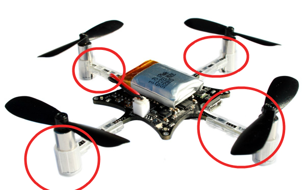
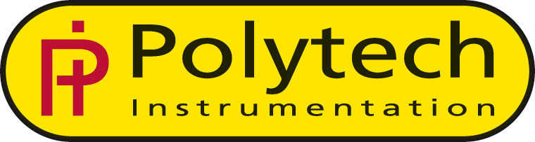
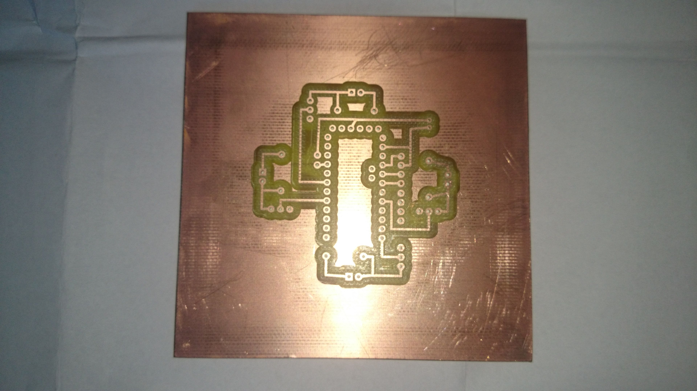
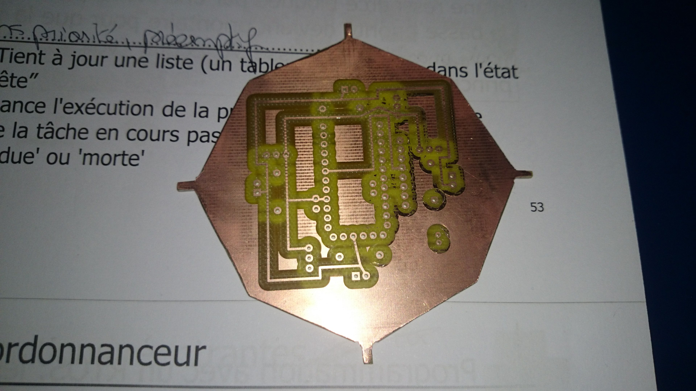
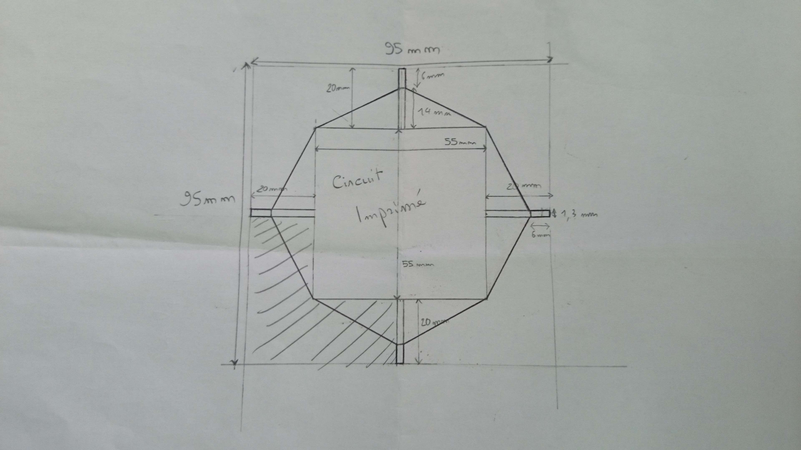

Njord Project
Build an awesome drone from scratch
外から援助
コンポーネントを全部受け取ってライブラリを作りましたから、ドローンを組み合わせなければなりません。けれど、私たちの大学は3Dプリンターもを回路を作る為に設備も持っていませんから、外へ助けを頼みました。この記事の目的は私たちを助けた会社と助けた会社より受け取った製品を紹介します。
モーターの固定具
Crazyflieのモーターを使う事が決めましたから、Crazyflieと同じモーターの固定具を使わなければなりません。この固定具はプラで作った小さいパイプ形の部品です。実は、回路から枝を四枚通り過ぎます。この枝に固定具を固定します。これから、モーターを固定具に固定します。
この部品を買う事が出来ませんが、BitcrazeのGitHubにモデル化するファイルをダウンロード出来ます。そして、このファイルから固定具を3Dプリンターでプリント出来ます。然し、上述したように私たちの大学は3Dプリンターを持っていませんから、外へ助けを探しました。
2014年12月に、私たちの大学でRobafis(毎年のロボットの競争)がありました。この時、製品を展覧会する会社がありました。特に、Polytech(Jeulinの子会社です)は3Dプリンターを展覧会しました。
話した後で、Polytechが私たちの為に、固定具を作る事が承諾しました。一週間後、私たちは封筒を受け取りました。封筒の中に欲しい部品がありました。

然し、穴を少し広げる為に、フライス盤で固定具を再加工しなければなりました。
回路
旧記でドローンの回路を紹介しました。FritzingのソフトウェアでPCBを描く事が出来ます。だから、回路を現実する為にファイルを輸出のが出来ます。けれど、上述したように、私たちの大学は回路を作る為に設備も持っていません。これから、電子工学の近い大学のENSEAに助けを頼みました。
私たちがFritzingでgerberファイルを作ってENSEA員にファイルを渡しました。数日後、ENSEA員は私たちに回路を作って出来たと知らせました。
回路から枝が必要だったから、枝を得る為に私たちが回路を切りました。
下の写真はドローンの図面：
ご注意:
ドローンの電気スキーマの紹介する記事から、電気スキームを変更しました。下に見て下さい：
電気スキームに無線通信はないのが見えます。このコンポーネントのモデルをインターネットでダウンロード出来ますけど、PCBのモデルは不完全です。修正出来ませんでしたから、諦めました。無線通信を線で回路に入れます。